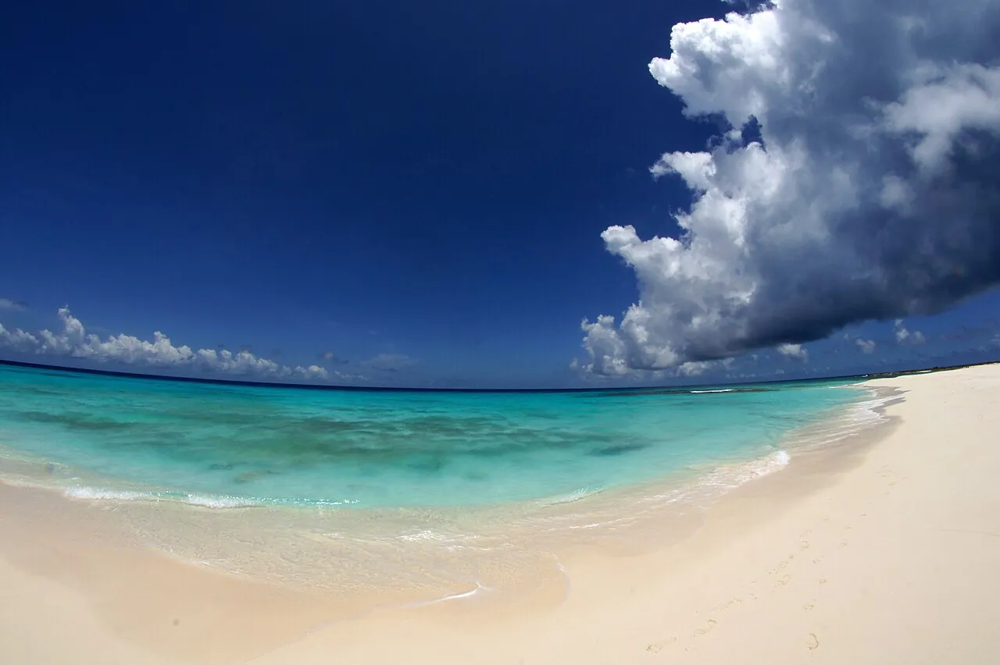

Los Roques
Venezuela · snorkeling, kitesurf, baignade

Archipel de sable blanc et de lagons turquoise protégé en parc national. Un des plus beaux lagons des Caraïbes.
- Lieu
- Venezuela
- Niveau
- Débutant
- Activités
- snorkeling, kitesurf, baignade
- Type d'eau
- Mer / océan
- Coordonnées
- 11.85, -66.75 (position approximative du secteur)
Dangers à connaître
- Parc national protégé.
- Soleil intense.
Le conseil d'Ocean Buddy
Renseigne-toi sur la situation du pays avant de voyager.
Ouvrir dans Ocean Buddy Télécharger sur l'App Store
Source : Fiche Ocean Buddy · septembre 2026 · à vérifier localement.